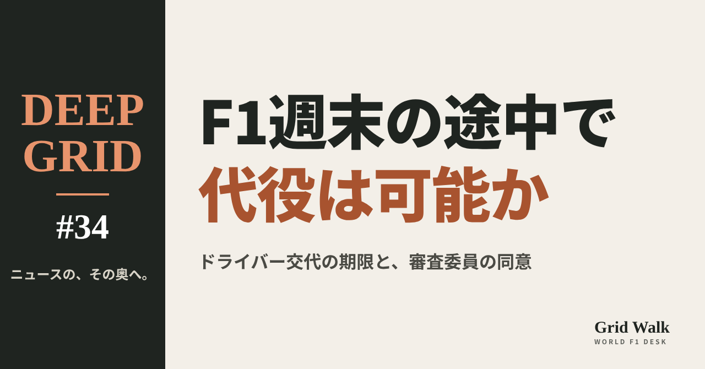
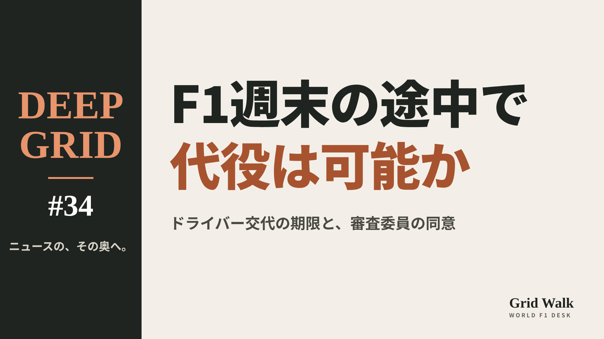
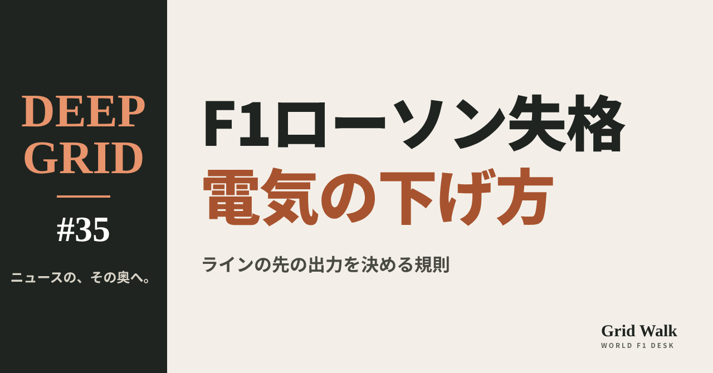
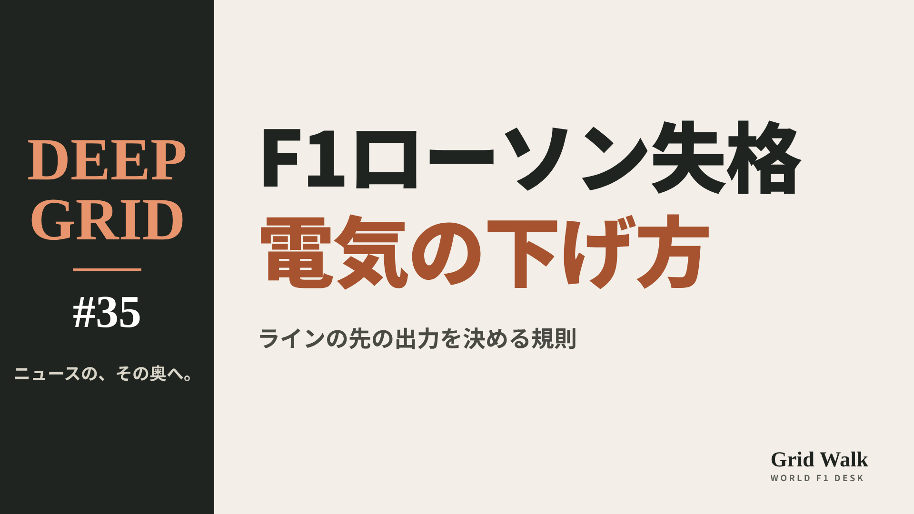

<meta charset="utf-8"><title>DEEP GRID #34・#35 note貼り付け</title>
<style>
/* one column of numbered paste steps; text steps vs image steps differ by marker */
:root{--bg:#F5F4F0;--card:#FFFFFF;--ink:#1D2321;--mute:#5F665F;--line:#DCDAD2;--btn:#1F5FBF;--btnok:#2E8B4F;--img:#E9F3EC;--imgink:#22663B;--sans:'IBM Plex Sans JP','Hiragino Sans','Noto Sans JP',sans-serif}
@media (prefers-color-scheme:dark){:root:not([data-theme="light"]){--bg:#171A19;--card:#202423;--ink:#ECEDE8;--mute:#A3AAA2;--line:#343937;--btn:#4D8BE6;--btnok:#3FA866;--img:#1E2C23;--imgink:#8FD3A6;color-scheme:dark}}
:root[data-theme="dark"]{--bg:#171A19;--card:#202423;--ink:#ECEDE8;--mute:#A3AAA2;--line:#343937;--btn:#4D8BE6;--btnok:#3FA866;--img:#1E2C23;--imgink:#8FD3A6;color-scheme:dark}
body{background:var(--bg);color:var(--ink);font-family:var(--sans);font-size:15px;line-height:1.75;padding:20px 16px 60px}
main{max-width:680px;margin:0 auto;display:grid;gap:28px}
header h1{font-size:22px;margin:0 0 6px;text-wrap:balance}
header p{margin:0;color:var(--mute);font-size:14px}
nav{display:flex;gap:8px;flex-wrap:wrap;margin-top:12px}
nav a{border:1px solid var(--line);border-radius:999px;padding:4px 14px;color:var(--ink);text-decoration:none;font-size:14px;background:var(--card)}
.part h2{font-size:18px;line-height:1.5;margin:0 0 12px;text-wrap:balance;display:flex;gap:10px;align-items:baseline;flex-wrap:wrap}
.tag{font-size:13px;background:var(--ink);color:var(--bg);border-radius:6px;padding:1px 9px}
.steps{list-style:none;margin:0;padding:0;display:grid;gap:12px}
.st{background:var(--card);border:1px solid var(--line);border-radius:12px;padding:12px;min-width:0}
.hd{display:flex;align-items:center;gap:8px;margin-bottom:8px}
.no{width:26px;height:26px;border-radius:50%;background:var(--btn);color:#fff;display:inline-flex;align-items:center;justify-content:center;font-size:13px;font-weight:700;flex:0 0 26px}
.im .no{background:var(--btnok)}
.hd em{font-style:normal;font-size:12px;background:var(--img);color:var(--imgink);border-radius:6px;padding:0 8px}
.bx{font-size:13.5px;line-height:1.7;border:1px solid var(--line);border-radius:8px;padding:8px 10px;max-height:110px;overflow:auto;overflow-wrap:anywhere}
.bx.tall{max-height:150px}.bx p{margin:0 0 6px}.bx h2{font-size:14px;margin:8px 0 4px}.bx a{color:var(--btn)}
.st img{display:block;width:100%;max-width:100%;border:1px solid var(--line);border-radius:8px}
.sub{font-size:12.5px;color:var(--mute);margin:6px 0 0}
.cp{width:100%;margin-top:8px;padding:12px;border:0;border-radius:10px;background:var(--btn);color:#fff;font:600 15px var(--sans);cursor:pointer}
.cp.ok{background:var(--btnok)}.cp.dl{background:var(--btnok)}.cp:focus-visible{outline:3px solid var(--ink);outline-offset:2px}
.xh{font-size:15px;margin:20px 0 10px}
.fb{font-size:13px;line-height:1.7;margin:8px 0 0;padding:8px 10px;border-radius:8px;background:var(--img);color:var(--imgink)}
.opts{display:grid;grid-template-columns:repeat(auto-fill,minmax(240px,1fr));gap:10px}
.opt{min-width:0}.opt img{display:block;width:100%;border:1px solid var(--line);border-radius:8px}
.ol{display:flex;align-items:center;gap:8px;margin-top:6px}.ol b{font-size:13px;flex:0 0 auto}.ol .on{font-size:12.5px;color:var(--mute);flex:1;min-width:0}.ol .cp{width:auto;flex:0 0 auto;padding:9px 14px}.ol .cp{margin:0;padding:9px}
.toast{font-size:13px;color:var(--mute);margin-top:6px}
</style>
<main><header><h1>DEEP GRID #34・#35 note貼り付け</h1><p>2本あります。青い番号は文章、緑は画像です。</p><nav><a href="#p1">#34</a><a href="#p2">#35</a></nav></header><section class="part" id="p1"><h2><span class="tag">DEEP GRID #34</span>F1は週末の途中でドライバーを替えられるのか　金曜の最後はオコン、土曜から平川【DEEP GRID #34】</h2><ol class="steps">
<li class="st im"><div class="hd"><span class="no">1</span><b>見出し画像</b><em>画像</em></div><button class="cp dl" data-img="img/driver-change-midweekend.png" data-name="deep-driver-change-midweekend_見出し画像.png">ダウンロード</button></li>
<li class="st"><div class="hd"><span class="no">2</span><b>タイトル</b></div><div class="bx" id="p1t">F1は週末の途中でドライバーを替えられるのか　金曜の最後はオコン、土曜から平川【DEEP GRID #34】</div><button class="cp" data-plain="p1t">タイトルをコピー</button></li>
<li class="st"><div class="hd"><span class="no">3</span><b>本文</b></div><div class="bx tall" id="p1r"><p>メキシコシティGPの金曜、ハースの31号車はFP1を平川亮が、FP2をエステバン・オコンが走った。ところが土曜の朝、ハースは週末の残りを平川で走らせると発表した。F1では、週末の途中にドライバーを替えることが、どこまで許されているのか。FIAの競技規則の「ドライバーの交代」の条文、体調不良のとき、そして過去の4つの例から読む。</p><p>データの表と、出典14件はサイトで → <a href="https://f1gridwalk.github.io/deep/driver-change-midweekend/?utm_source=note&amp;utm_campaign=driver-change-midweekend">https://f1gridwalk.github.io/deep/driver-change-midweekend/?utm_source=note&amp;utm_campaign=driver-change-midweekend</a></p><h2>先に結論</h2><p>① F1では、週末の途中でもドライバーを替えられる。FIAの競技規則（B1.7.2）によると、週末の最初の車検が終わったあとの交代には、スチュワード（審査委員）の同意が要る。スプリントのない週末なら、期限は予選が始まる前まで。</p><p>② メキシコシティGPのハースは、まさにこの形だった。金曜はFP1を平川、FP2をオコンが走り、土曜の朝に、FP3から予選、決勝までを平川が走ると発表した（F1公式サイト）。</p><p>③ 交代がスチュワードに認められた場合、代役は、もとのドライバーに割り当てられたパワーユニットとタイヤを使う（B1.7.5）。新しく入ったドライバーも、選手権のポイントをもらえる。1チームがシーズンの決勝に使えるドライバーは4人まで（B1.7.1）。</p><p>④ 予選のあとに乗れなくなったときは、ふつうの交代の期限を過ぎている。条文は、不可抗力による交代は「別に検討する」とだけ書いている。</p><p>⑤ 週末の途中の交代は、過去にもある。2022年イタリアGPのデ・フリース、2024年サウジアラビアGPのベアマンは、どちらも体調を崩したドライバーの代わりに、週末の途中から残りを任された。</p><p><strong>週末の途中の交代、あなたならどこまで認めるべきだと思いますか？</strong></p><h2>続きは F1 Grid Walk で</h2><p>ここから先の「金曜の最後はオコン、土曜から平川」「条文には何と書いてあるか」「体調を崩したら、どうなるのか」「週末の途中の交代、4つの前例」「サンパウロGPに向けて、決まっていること」は、サイトで読めます。ドライバーの交代の条文（セクションB 第9版）、どの版で、何番だったか、週末の途中の交代の例、メキシコシティGPの週末の流れ（ハース31号車）の表も載せています。</p><p><strong>DEEP GRID #34「F1は週末の途中でドライバーを替えられるのか　金曜の最後はオコン、土曜から平川」</strong></p><p><a href="https://f1gridwalk.github.io/deep/driver-change-midweekend/">https://f1gridwalk.github.io/deep/driver-change-midweekend/</a></p><p>━━━━━━━━━━</p><p><strong>F1 Grid Walk では、世界のF1ニュースを毎日日本語でまとめています。</strong></p><p>海外の記事の要約を、毎日載せています。</p><p>ほかの海外記事も読みたい方は、F1 Grid Walkへ。</p><p><a href="https://f1gridwalk.github.io/">https://f1gridwalk.github.io/</a></p><p>━━━━━━━━━━</p><p><a href="https://www.fia.com/system/files/documents/fia_2026_f1_regulations_-_section_b_sporting_-_iss_09_-_2026-10-01.pdf">出典：FIA</a></p><p><a href="https://api.fia.com/system/files/documents/fia_2026_f1_regulations_-_section_b_sporting_-_iss_07_-_2026-06-25.pdf">出典：FIA</a></p><p><a href="https://www.fia.com/system/files/documents/fia_2026_f1_regulations_-_section_b_sporting_-_iss_06_-_2026-04-28.pdf">出典：FIA</a></p><p><a href="https://www.fia.com/sites/default/files/fia_2026_f1_regulations_-_section_b_sporting_-_iss01_-_2024-10-17.pdf">出典：FIA</a></p><p><a href="https://www.fia.com/regulation/category/110">出典：FIA</a></p><p><a href="https://www.formula1.com/en/latest/article/hirakawa-to-replace-ocon-at-haas-for-remainder-of-mexico-city-grand-prix-weekend.2cl5jN0g3rZ2pIYQvc00xM">出典：F1公式サイト</a></p><p><a href="https://www.tsn.ca/motorsports/formula-1/article/haas-hands-hirakawa-f1-debut-in-mexico-in-place-of-ocon-in-sudden-unexplained-change/">出典：AP通信（TSN掲載）</a></p><p><a href="https://grandepremio.com/en/f1/mexican-gp-2026-starting-grid-hamilton-on-pole-as-verstappen-and-lawson-take-penalties/">出典：Grande Prêmio</a></p><p><a href="https://racer.com/2026/10/29/antonelli-bottas-skip-mexico-city-media-day-due-to-illness">出典：RACER</a></p><p><a href="https://speedcafe.com/f1-news-2026-mexico-city-grand-prix-kimi-antonelli-valtteri-bottas-sick-update-media-day-missing-update/">出典：Speedcafe</a></p><p><a href="https://speedcafe.com/hulkenberg-replaces-stroll-at-racing-point/">出典：Speedcafe</a></p><p><a href="https://www.formula1.com/en/latest/article/breaking-albon-ruled-out-of-italian-grand-prix-with-appendicitis-as.5TjaGYJohrzYVyKqLvSy5Y">出典：F1公式サイト</a></p><p><a href="https://www.formula1.com/en/latest/article/breaking-sainz-ruled-out-of-saudi-arabian-gp-with-appendicitis-as-f2-racer.2JzIonRBBDEjEb2AlkdVfl">出典：F1公式サイト</a></p><p><a href="https://www.motorsportweek.com/2024/11/01/haas-confirms-oliver-bearman-will-contest-full-f1-brazil-gp-weekend/">出典：Motorsport Week</a></p></div><button class="cp" data-rich="p1r">本文をコピー</button></li>
<li class="st"><div class="hd"><span class="no">4</span><b>ハッシュタグ</b></div><div class="bx" id="p1h">#F1 #F1jp #平川亮 #オコン #ハース #F1ルール #DEEPGRID</div><button class="cp" data-plain="p1h">タグをコピー</button></li>
</ol><h3 class="xh">X</h3><ol class="steps">
<li class="st im"><div class="hd"><b>X用の画像</b><em>画像</em></div><button class="cp dl" data-img="img/x_driver-change-midweekend.png" data-name="x_deep-driver-change-midweekend.png">ダウンロード</button></li>
<li class="st"><div class="hd"><b>① noteをシェアするときの文</b></div><div class="bx" id="p1x0">金曜の最後はオコン、土曜から平川。F1は週末の途中でドライバーを替えられるのか。カギは交代の期限と、審査委員の同意。FIAの規則から読むDEEP GRID #34をnoteにまとめました #F1jp #平川亮</div><button class="cp" data-plain="p1x0">コピー</button></li>
<li class="st"><div class="hd"><b>② ①への返信</b></div><div class="bx" id="p1x1">ほかの海外記事も読みたい方は、F1 Grid Walkへ。
https://f1gridwalk.github.io/deep/driver-change-midweekend/?utm_source=x&amp;utm_campaign=driver-change-midweekend</div><button class="cp" data-plain="p1x1">コピー</button></li>
<li class="st"><div class="hd"><b>③ ②への返信</b></div><div class="bx" id="p1x2">毎日の海外F1ニュースは、日本語でこちらにまとめています。
https://f1gridwalk.github.io/</div><button class="cp" data-plain="p1x2">コピー</button></li>
</ol></section><section class="part" id="p2"><h2><span class="tag">DEEP GRID #35</span>ローソンはなぜメキシコの予選で失格になったのか　ラインの先で「電気の下げ方」を決める規則【DEEP GRID #35】</h2><ol class="steps">
<li class="st im"><div class="hd"><span class="no">1</span><b>見出し画像</b><em>画像</em></div><button class="cp dl" data-img="img/lawson-dsq-mgu-k.png" data-name="deep-lawson-dsq-mgu-k_見出し画像.png">ダウンロード</button></li>
<li class="st"><div class="hd"><span class="no">2</span><b>タイトル</b></div><div class="bx" id="p2t">ローソンはなぜメキシコの予選で失格になったのか　ラインの先で「電気の下げ方」を決める規則【DEEP GRID #35】</div><button class="cp" data-plain="p2t">タイトルをコピー</button></li>
<li class="st"><div class="hd"><span class="no">3</span><b>本文</b></div><div class="bx tall" id="p2r"><p>メキシコシティGPの予選で8位だったリアム・ローソン（レーシングブルズ）が、予選の結果から失格になった。理由は、Q2の最速ラップでコントロールラインを越えた直後の、電気の出力の下げ方だ。2026年の技術規則が「どれだけ速く下げてよいか」をどう決めているのか、チームの「有利にはなっていない」という主張がなぜ通らなかったのか、そして予選の記録が消えても決勝を走れる仕組みを、FIAの文書と条文から読む。</p><p>データの表と、出典4件はサイトで → <a href="https://f1gridwalk.github.io/deep/lawson-dsq-mgu-k/?utm_source=note&amp;utm_campaign=lawson-dsq-mgu-k">https://f1gridwalk.github.io/deep/lawson-dsq-mgu-k/?utm_source=note&amp;utm_campaign=lawson-dsq-mgu-k</a></p><h2>先に結論</h2><p>① ローソン（レーシングブルズ）は予選8位だったが、予選の結果から失格になった。FIAのスチュワードの決定によると、Q2の最速ラップでコントロールラインを越えたあと、すぐにアクセルを戻さず、規則で決められた電気の出力の「ステップダウン（規則で決められた出力の下げ方）」にならなかった。</p><p>② もとになった規則は、2026年の技術規則C5.12.6とC5.12.7だ。ERS-K（MGU-K側）の電気のDC出力が100kWを超えている間は、ドライバーのパワー要求も電気の出力も、決められた速さより急に下げてはいけない。上限は大会によって「1秒間に50kW」か「1秒間に100kW」。ギアシフトの最中や時速210km未満のときなど、例外も条文に並んでいる。</p><p>③ チームは「性能の上で有利にはなっていない」と主張し、違反を自分から申告してもいた。それでもスチュワードは、有利かどうかに関係なく技術規則の違反は許されず、車は大会のあいだ常に規則に合っていなければならないとして、前例どおり失格にした。</p><p>④ 予選の記録が消えても、スチュワードの許可があれば決勝は走れる。RacingNews365は、許可はフリー走行のタイムをもとにふつうは出され、ローソンは最後尾に回ると報じた。パルクフェルメの間に車の設定や部品を変えれば、ピットレーンスタートになる。11月1日17時（日本時間）の時点で、FIAの公開資料ではスタート位置は確かめられなかった。</p><p><strong>「有利ではなかった」でも失格。この判断、あなたはどう見ますか？</strong></p><h2>続きは F1 Grid Walk で</h2><p>ここから先の「予選8位が消えるまで」「条文を読む：電気の出力は「急に下げてはいけない」」「「有利ではなかった」は、なぜ通らなかったのか」「予選の記録が消えても、決勝を走れる仕組み」は、サイトで読めます。失格が決まるまでの流れ（FIAの文書）、技術規則 C5.12「パワーユニットのトルクまたはパワーの要求」（第21版）、C5.12.7の例外（電気の出力を、決められた速さより急に下げてよい場合）、最後尾スタートとピットレーンスタートの表も載せています。</p><p><strong>DEEP GRID #35「ローソンはなぜメキシコの予選で失格になったのか　ラインの先で「電気の下げ方」を決める規則」</strong></p><p><a href="https://f1gridwalk.github.io/deep/lawson-dsq-mgu-k/">https://f1gridwalk.github.io/deep/lawson-dsq-mgu-k/</a></p><p>━━━━━━━━━━</p><p><strong>F1 Grid Walk では、世界のF1ニュースを毎日日本語でまとめています。</strong></p><p>海外の記事の要約を、毎日載せています。</p><p>ほかの海外記事も読みたい方は、F1 Grid Walkへ。</p><p><a href="https://f1gridwalk.github.io/">https://f1gridwalk.github.io/</a></p><p>━━━━━━━━━━</p><p><a href="https://www.fia.com/system/files/decision-document/2026_mexico_city_grand_prix_-_infringement_-_car_30_-_technical_nonconformity.pdf">出典：FIA</a></p><p><a href="https://www.fia.com/system/files/decision-document/2026_mexico_city_grand_prix_-_mgu-k_infringement_car_30.pdf">出典：FIA</a></p><p><a href="https://www.fia.com/system/files/documents/fia_2026_f1_regulations_-_section_c_technical_-_iss_21_-_2026-10-19.pdf">出典：FIA</a></p><p><a href="https://racingnews365.com/breaking-liam-lawson-disqualified-after-mexico-city-qualifying-technical-breach">出典：RacingNews365</a></p></div><button class="cp" data-rich="p2r">本文をコピー</button></li>
<li class="st"><div class="hd"><span class="no">4</span><b>ハッシュタグ</b></div><div class="bx" id="p2h">#F1 #F1jp #ローソン #レーシングブルズ #F1ルール #MGUK #DEEPGRID</div><button class="cp" data-plain="p2h">タグをコピー</button></li>
</ol><h3 class="xh">X</h3><ol class="steps">
<li class="st im"><div class="hd"><b>X用の画像</b><em>画像</em></div><button class="cp dl" data-img="img/x_lawson-dsq-mgu-k.png" data-name="x_deep-lawson-dsq-mgu-k.png">ダウンロード</button></li>
<li class="st"><div class="hd"><b>① noteをシェアするときの文</b></div><div class="bx" id="p2x0">ローソンはなぜメキシコの予選で失格になったのか。ラインの先で電気の出力をどれだけ速く下げてよいかを決める規則を、FIAの文書と条文から読むDEEP GRID #35をnoteにまとめました #F1jp #ローソン</div><button class="cp" data-plain="p2x0">コピー</button></li>
<li class="st"><div class="hd"><b>② ①への返信</b></div><div class="bx" id="p2x1">ほかの海外記事も読みたい方は、F1 Grid Walkへ。
https://f1gridwalk.github.io/deep/lawson-dsq-mgu-k/?utm_source=x&amp;utm_campaign=lawson-dsq-mgu-k</div><button class="cp" data-plain="p2x1">コピー</button></li>
<li class="st"><div class="hd"><b>③ ②への返信</b></div><div class="bx" id="p2x2">毎日の海外F1ニュースは、日本語でこちらにまとめています。
https://f1gridwalk.github.io/</div><button class="cp" data-plain="p2x2">コピー</button></li>
</ol></section></main><script>
function done(b,msg){const t=b.dataset.t||b.textContent;b.dataset.t=t;b.classList.add('ok');b.textContent=msg||'コピーしました';setTimeout(()=>{b.classList.remove('ok');b.textContent=t},2000)}
function selectEl(el){const r=document.createRange();r.selectNodeContents(el);const s=getSelection();s.removeAllRanges();s.addRange(r)}
async function rich(el,b){
  try{await navigator.clipboard.write([new ClipboardItem({'text/html':new Blob([el.innerHTML],{type:'text/html'}),'text/plain':new Blob([el.innerText],{type:'text/plain'})})]);done(b);return}catch(e){}
  selectEl(el);let ok=false;try{ok=document.execCommand('copy')}catch(e){}
  if(ok){getSelection().removeAllRanges();done(b)}else{done(b,'選択しました。コピーしてください')}}
async function plain(el,b){
  try{await navigator.clipboard.writeText(el.innerText);done(b);return}catch(e){}
  selectEl(el);let ok=false;try{ok=document.execCommand('copy')}catch(e){}
  if(ok){getSelection().removeAllRanges();done(b)}else{done(b,'選択しました。コピーしてください')}}
let dlns=null;(async()=>{try{dlns=await window.claude?.use?.("downloads")}catch(e){dlns=null}})();
async function img(src,b){
  b.dataset.t=b.dataset.t||b.textContent;
  if(!dlns){try{dlns=await window.claude?.use?.("downloads")}catch(e){}}
  if(!dlns){b.textContent='ダウンロードできませんでした';setTimeout(()=>{b.textContent=b.dataset.t},3500);return}
  try{const blob=await fetch(src).then(r=>r.blob());b.textContent='保存の確認を開いています…';
    await dlns.save({filename:b.dataset.name,data:blob});done(b,'ダウンロードしました')}
  catch(e){const c=e&&e.code;b.textContent=c==='declined'?'キャンセルしました':c==='rate_limited'?'少し待ってからもう一度押してください':'ダウンロードできませんでした';setTimeout(()=>{b.textContent=b.dataset.t},3500)}}
document.querySelectorAll('.cp').forEach(b=>b.addEventListener('click',()=>{
  if(b.dataset.rich)rich(document.getElementById(b.dataset.rich),b);
  else if(b.dataset.plain)plain(document.getElementById(b.dataset.plain),b);
  else img(b.dataset.img,b)}));
</script>